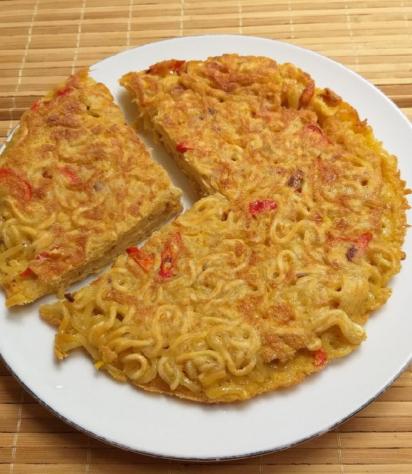

Fried Egg Noodle

Description
Have you ever been bored of eating instant ramen? And want to try
something new? This must be the recipes you've been looking for.
Ingredients
- An egg
- 2 tablespoon of all-purpose flour
- Any instant ramen you like
Steps
- Boil the noodle in the pot for 5 minutes
- Crack the egg and put it into a bowl
- Add 2 tablespoon of all-purpose flour to the bowl
- Add the boiled noodle to the bowl
- Put all the spices of the ramen into the bowl as well
- Whisk it all together
- Heat the pan with oil on it
- Pour what's within the bowl into the pan
- Fry it for 7 minutes
- Don't forget to flip both sides
See other recipes!